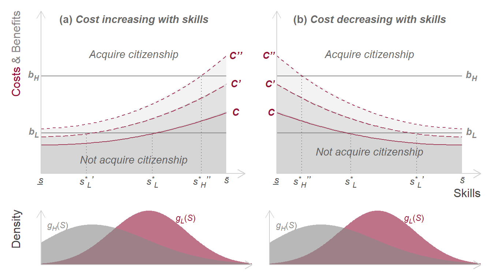
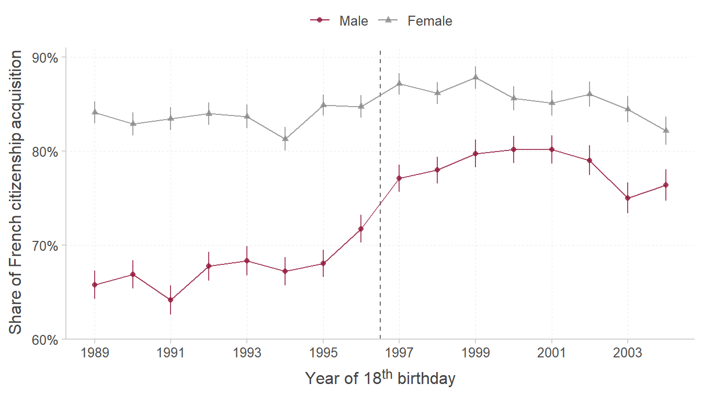
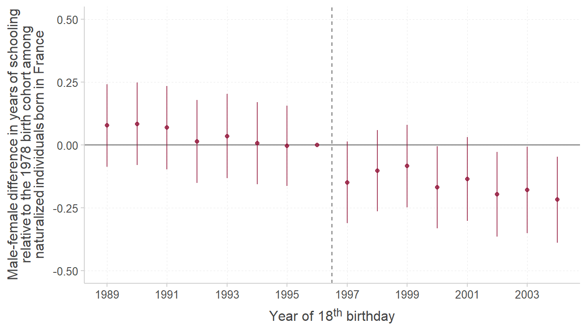

debut <- Sys.time()
# R version 4.3.1
# RStudio version 2023.06.2+561
# Compile time: 1h20
set.seed(1)
library(haven)
library(ggtext) # Version 0.1.2
library(Hmisc) # Version 5.1.0
library(readxl) # Version 1.4.3
library(patchwork) # Version 1.1.3
library(stargazer) # Version 5.2.3
library(tidyverse) # Version 2.0.0
library(data.table) # Version 1.14.8
library(kableExtra) # Version 1.3.4
library(broom) # Version 1.0.5
library(scales) # Version 1.2.1Naturalization policies as screening mechanisms
Setup
Packages and seed
Plot parameters
# Colors
mypal <- c("#921539", "#888888")
greys <- c("#eaeaea", "#d1d1d1", "#444444")
grad <- c("#000000", "#921539", "#ffffff")
# Plot parameters
text_size <- 12
m <- text_size / 2
bwidth <- 7
bheight <- bwidth*(9/16)
knitr::opts_chunk$set(fig.width = bwidth, fig.height = bheight, fig.align = "center")
# General graph theme
custom_theme <- function() {
theme(text = element_text(color = greys[3], size = text_size, lineheight = .9),
# Axes
axis.ticks = element_line(color = greys[2]),
axis.ticks.length = unit(m/2, "pt"),
axis.line = element_line(color = greys[2]),
axis.text = element_markdown(),
axis.title.x = element_markdown(margin = margin(t = m)),
axis.title.x.top = element_markdown(margin = margin(b = m)),
axis.title.y = element_markdown(margin = margin(r = m)),
axis.title.y.right = element_markdown(margin = margin(l = m)),
# Plot
plot.margin = margin(m, m, m, m),
plot.background = element_blank(),
panel.background = element_blank(),
panel.grid.minor = element_blank(),
panel.grid.major = element_line(color = greys[1], linetype = "dashed", linewidth = rel(.5)),
# Legend
legend.background = element_blank(),
legend.box.background = element_blank(),
legend.key = element_blank(),
legend.margin = margin(0, 0, 0, 0, "cm"),
legend.position = "top",
legend.direction = "horizontal",
legend.title = element_blank(),
# Strips
strip.background = element_blank(),
strip.placement = "outside",
strip.text = element_text(color = greys[3], size = rel(0.8), margin = margin(m, m, m, m)))
}Figures
Theoretical framework
theory <- tibble(n = "Simulated numbers",
x = seq(0, 1, .01)) %>%
mutate(c = .275 + .45*((x-1)^2),
d = .225 + .33*((x-1)^2),
e = .175 + .21*((x-1)^2),
b = rep(0, 101)) %>%
pivot_longer(c(c, d,e), names_to = "grp", values_to = "c")
#fwrite(theory, paste0(out_dir, "theory.csv"))
p1 <- ggplot() +
# Ribbons
geom_ribbon(data = theory, aes(x = x, ymin = b, ymax = c, alpha = grp),
color = NA, fill = greys[2], show.legend = F) +
scale_alpha_manual(values = c(.25, .5, .75)) +
# Text
geom_richtext(data = tibble(x = .5, y = 1, label = c("**(b) *Cost decreasing with skills***")),
aes(x = x, y = y, label = label), fill = NA, label.colour = NA, alpha = .8,
color = greys[3], hjust = .5, vjust = 1) +
annotate("text", x = .5, y = .7, label = "italic('Acquire citizenship')",
color = greys[3], parse = T, hjust = .5, vjust = 0, alpha = .8)+
annotate("text", x = .5, y = .1, label = "italic('Not acquire citizenship')",
color = greys[3], parse = T, hjust = .5, vjust = 0, alpha = .8) +
# Benefits
geom_line(data = tibble(x = rep(0:1, 2), y = rep(c(.25, .6), each = 2)),
aes(x = x, y = y, group = y), alpha = 1, color = mypal[2], linetype = "solid") +
geom_richtext(data = tibble(x = 1.05, y = c(.25, .6),
label = c('***b<sub>L</sub>***', '***b<sub>H</sub>***')),
aes(x = x, y = y, label = label),
fill = NA, label.colour = NA, alpha = 1, color = mypal[2], size = 3.5) +
# Curves
geom_curve(aes(x = 0, xend = 1, y = .725, yend = .275),
color = mypal[1], curvature = .185, alpha = .8, linetype = "dashed") +
geom_curve(aes(x = 0, xend = 1, y = .55, yend = .225),
color = mypal[1], curvature = .14, alpha = .8, linetype = "longdash") +
geom_curve(aes(x = 0, xend = 1, y = .375, yend = .175),
color = mypal[1], curvature = .09, alpha = .8) +
# Axes
scale_y_continuous(name = " ", limits = 0:1, expand = c(0,0), breaks = c(.375, .55, .725),
labels = c("*C*", "*C'*", "*C''*")) +
scale_x_continuous("Skills", limits = c(0, 1.1), breaks = c(0, .135, .40, .755, 1), expand = c(0, 0),
labels = c('<i>s̲</i>',
"<i>s<sup>*</sup><sub>H</sub><sup><b>''</b></sup></i>",
"<i>s<sup>*</sup><sub>L</sub></i>",
"<i>s<sup>*</sup><sub>L</sub><sup><b>'</b></sup></i>",
'<i>s̄</i>')) +
geom_segment(data = tibble(x = c(.135, .40, .755), xend = c(.135, .40, .755),
y = 0, yend = c(.6, .25, .25)),
aes(x = x, xend = xend, y = y, yend = yend),
color = mypal[2], linetype = "dotted", alpha = 1) +
# Theme
custom_theme() +
theme(axis.ticks = element_blank(),
axis.text.y = element_markdown(color = mypal[1], face = "bold"),
axis.line.y = element_line(arrow = grid::arrow(length = unit(0.3, "cm"))),
axis.line.x = element_line(arrow = grid::arrow(length = unit(0.3, "cm"))),
axis.title.y = element_markdown(hjust = 1, size = text_size),
axis.title.x = element_markdown(hjust = 1, size = text_size, margin = margin(-1)),
axis.text.x = element_markdown(),
panel.grid.major = element_blank())
p2 <- ggplot() +
# Ribbons
geom_ribbon(data = rbind(theory %>% filter(grp == "c") %>%
mutate(c = sort(theory[theory$grp == "c", ]$c)),
theory %>% filter(grp == "d") %>%
mutate(c = sort(theory[theory$grp == "d", ]$c)),
theory %>% filter(grp == "e") %>%
mutate(c = sort(theory[theory$grp == "e", ]$c))),
aes(x = x, ymin = b, ymax = c, alpha = grp),
color = NA, fill = greys[2], show.legend = F) +
scale_alpha_manual(values = c(.25, .5, .75)) +
# Text
geom_richtext(data = tibble(x = .5, y = 1, label = c("**(a) *Cost increasing with skills***")),
aes(x = x, y = y, label = label), fill = NA, label.colour = NA, alpha = .8,
color = greys[3], hjust = .5, vjust = 1) +
annotate("text", x = .5, y = .7, label = "italic('Acquire citizenship')",
color = greys[3], parse = T, hjust = .5, vjust = 0, alpha = .8)+
annotate("text", x = .5, y = .05, label = "italic('Not acquire citizenship')",
color = greys[3], parse = T, hjust = .5, vjust = 0, alpha = .8) +
# Benefits
geom_line(data = tibble(x = rep(0:1, 2), y = rep(c(.25, .6), each = 2)),
aes(x = x, y = y, group = y), alpha = 1, color = mypal[2], linetype = "solid") +
# Curves
geom_curve(aes(x = 0, xend = 1, y = .275, yend = .725),
color = mypal[1], curvature = .185, alpha = .8, linetype = "dashed") +
geom_curve(aes(x = 0, xend = 1, y = .225, yend = .55),
color = mypal[1], curvature = .14, alpha = .8, linetype = "longdash") +
geom_curve(aes(x = 0, xend = 1, y = .175, yend = .375),
color = mypal[1], curvature = .09, alpha = .8) +
geom_richtext(data = tibble(x = 1.05, y = c(.375, .55, .725),
label = c("***C***", "***C'***", "***C''***")),
aes(x = x, y = y, label = label),
fill = NA, label.colour = NA, alpha = 1, color = mypal[1], size = 3.5) +
# Axes
scale_y_continuous(paste0('<span style = "color:', mypal[1], ';">Costs </span>',
'<span style = "color:', mypal[2], ';">& Benefits</span>'),
limits = 0:1, expand = c(0,0), breaks = c(.25, .6),
labels = c('*b<sub>L</sub>*', '*b<sub>H</sub>*')) +
scale_x_continuous(" ", limits = c(0, 1.1), breaks = c(0, .245, .6, .865, 1), expand = c(0, 0),
labels = c('<i>s̲</i>',
"<i>s<sup>*</sup><sub>L</sub><sup><b>'</b></sup></i>",
"<i>s<sup>*</sup><sub>L</sub></i>",
"<i>s<sup>*</sup><sub>H</sub><sup><b>''</b></sup></i>",
'<i>s̄</i>')) +
geom_segment(data = tibble(x = c(.245, .6, .865), xend = c(.245, .6, .865),
y = 0, yend = c(.25, .25, .6)),
aes(x = x, xend = xend, y = y, yend = yend),
color = mypal[2], linetype = "dotted", alpha = 1) +
# Theme
custom_theme() +
theme(axis.ticks = element_blank(),
axis.text.y = element_markdown(color = mypal[2], face = "bold"),
axis.line.y = element_line(arrow = grid::arrow(length = unit(0.3, "cm"))),
axis.line.x = element_line(arrow = grid::arrow(length = unit(0.3, "cm"))),
axis.title.y = element_markdown(hjust = 1, size = text_size),
axis.title.x = element_markdown(hjust = 1, size = text_size, margin = margin(-1)),
axis.text.x = element_markdown(),
panel.grid.major = element_blank())
dsts <- tibble(x = c(rnorm(1000, .505, .1), rnorm(1140, .505, .25),
rnorm(1000, .505, .1), rnorm(1140, .205, .25)),
grp = rep(c(rep("h", 1000), rep("l", 1140)), 2),
facet = rep(c("a", "b"), each = 2140)) %>%
filter(x > 0 & x < 1)
p3 <- ggplot(dsts %>% filter(facet == "b"), aes(x = x, fill = grp)) +
geom_density(color = "transparent", alpha = .6, show.legend = F, bw = .15) +
geom_richtext(data = tibble(x = c(.685, .08), y = c(2.2, 1.9), color = c("A", "B"),
label = c("<i>g<sub>L</sub></i>(<i>S</i>)</i>",
"<i>g<sub>H</sub></i>(<i>S</i>)</i>")),
aes(x = x, y = y, label = label, color = color), size = 3,
fill = NA, label.colour = NA, hjust = .5, vjust = 1, show.legend = F) +
scale_fill_manual(values = mypal) +
scale_color_manual(values = mypal) +
scale_x_continuous(name = " ", limits = 0:1, expand = c(0, 0)) +
scale_y_continuous(" ", expand = c(0, 0)) +
custom_theme() +
theme(axis.ticks = element_blank(),
axis.text.y = element_blank(),
axis.line.y = element_line(arrow = grid::arrow(length = unit(0.3, "cm"))),
axis.line.x = element_line(arrow = grid::arrow(length = unit(0.3, "cm"))),
axis.title.y = element_markdown(hjust = 1, size = text_size),
axis.title.x = element_blank(),
axis.text.x = element_blank(),
panel.grid.major = element_blank())
p4 <- ggplot(dsts %>% filter(facet == "b"), aes(x = x, fill = grp)) +
geom_density(color = "transparent", alpha = .6, show.legend = F, bw = .15) +
geom_richtext(data = tibble(x = c(.685, .08), y = c(2.2, 1.9), color = c("A", "B"),
label = c("<i>g<sub>L</sub></i>(<i>S</i>)</i>",
"<i>g<sub>H</sub></i>(<i>S</i>)</i>")),
aes(x = x, y = y, label = label, color = color), size = 3,
fill = NA, label.colour = NA, hjust = .5, vjust = 1, show.legend = F) +
scale_fill_manual(values = mypal) +
scale_color_manual(values = mypal) +
scale_x_continuous(name = " ", limits = 0:1, expand = c(0, 0)) +
scale_y_continuous("Density", expand = c(0, 0)) +
custom_theme() +
theme(axis.ticks = element_blank(),
axis.text.y = element_blank(),
axis.line.y = element_line(arrow = grid::arrow(length = unit(0.3, "cm"))),
axis.line.x = element_line(arrow = grid::arrow(length = unit(0.3, "cm"))),
axis.title.y = element_markdown(hjust = 1, size = text_size),
axis.title.x = element_blank(),
axis.text.x = element_blank(),
panel.grid.major = element_blank())
(p2+p1)/(p4+p3) + plot_layout(heights = c(.75, .25))
ggsave("../working-papers/govind_sirugue_2023/out/theory.png", height = bheight, width = bwidth)First stage
trend_fs <- fread("../working-papers/govind_sirugue_2023/src/fs.csv")
ggplot(trend_fs,
aes(x = year18, y = frac, color = reorder(male, order_male), shape = reorder(male, order_male))) +
geom_vline(xintercept = 1978.5 + 18, linetype = "dashed", color = alpha(greys[3], .8)) +
geom_line(alpha = .8) + geom_point(alpha = .8) +
geom_errorbar(aes(ymin = lb, ymax = ub), width = .0, alpha = .8) +
scale_x_continuous("Year of 18<sup>th</sup> birthday", breaks = seq(1987, 2005, 2)) +
scale_y_continuous("Share of French citizenship acquisition", limits = c(.6, .91),
labels = paste0(6:9*10, "%"), expand = c(0, 0)) +
scale_color_manual(values = mypal) +
custom_theme()
ggsave("../working-papers/govind_sirugue_2023/out/preview.png", width = bwidth, height = bheight)Education among non-French at birth
first_stage_yos_event <- fread("../working-papers/govind_sirugue_2023/src/fs_yos_event.csv")
ggplot(first_stage_yos_event, aes(x = as.numeric(year), y = coef, ymin = lb, ymax = ub)) +
geom_hline(yintercept = 0, color = alpha(greys[3], .8)) +
geom_vline(xintercept= 1996.5, linetype = "dashed", color = alpha(greys[3], .8)) +
geom_point(color = mypal[1], alpha = .8) + geom_errorbar(width = 0, color = mypal[1], alpha = .8) +
scale_x_continuous("Year of 18<sup>th</sup> birthday", breaks = seq(1987, 2005, 2)) +
scale_y_continuous(paste("Male-female difference in years of schooling",
"relative to the 1978 birth cohort among",
"naturalized individuals born in France", sep = "<br>"),
limits = c(-.5, .5))+
scale_color_manual(values = mypal) +
custom_theme() 
ggsave("../working-papers/govind_sirugue_2023/out/fs_yos_event.png", width = bwidth, height = bheight)